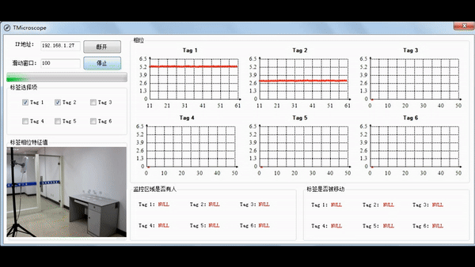

Dr. Zhonqin WangEmail: zhongqin.wang@uts.edu.au Github: https://zhongqin-wang.github.io/ Google Scholar: https://scholar.google.com/citations?user=F9UMFwIAAAAJ&hl=en |

|
RESEARCH INTERESTS
I specialize in designing Contactless, Sensorless, and Wireless sensing solutions that extend beyond traditional visual systems, aiming to build innovative and commercially viable sensing applications. My current research interests include:
- Radio Sensing and Communication: Integrating sensing and communication to harness radio signals for both data transmission and environmental perception.
- Contactless Healthcare and Eldercare: Developing non-invasive, wireless technologies for seamless health monitoring and eldercare, ensuring comfort and privacy.
- Battery-free Internet of Things (IoT): Leading the development of sustainable, battery-free IoT devices, enhancing eco-friendliness and ease of use.
- Radio-Visual Joint Learning and Sensing: Combining radio frequency and visual data to create advanced sensing systems that boost accuracy and decision-making capabilities.
WORK EXPERIENCE
Research Fellow supervised by Prof. Andrew Zhang
- Researching
- Master/PhD student supervision
Lecturer at College of Information and Engineering
- Researching
- Teaching
- Master student supervision
Research Associate supervised by Prof. Min Xu
- Developed an elderly healthcare system using commercial off-the-shelf millimeter-wave devices
- Led the development of key functionalities, including moving object tracking, vital signs estimation, fall detection, stationary object localization, and people counting
- Designed low-computational cutting-edge algorithms to enhance the real-time performance of the system
- Provided valuable mentorship and guidance to Ph.D. students
Research Engineer and Research Assistant supervised by Prof. Andrew Zhang
- Designed a novel device-free WiFi tracking scheme
- Implemented a real-time tracking demonstration system (Demo video available at: https://youtu.be/oIPGrRmY-uc)
- Published the research outcome in an A* top journal
EDUCATION
School of Electrical and Data Engineering
Ph.D. in Engineering supervised by Prof. Min Xu
Thesis: Computer Vision-assisted Battery-free RFID Systems for Object Recognition, Localization and Orientation
School of Internet of Things
Ph.D. in Information Network supervised by Prof. Guoliang Chen
Thesis: Research on Object Position Sensing and Multi-Tag Mutual Coupling Suppression in Battery-free RFID
Nanjing University of Posts and Telecommunications, China
School of Computer Science and Technology
M.S. in Computer Software and Theory supervised by Prof. Ning Ye
School of Electrical Engineering and Automation
B.S. in Electrical Engineering and Automation
PUBLICATIONS
 |
[1] Zhongqin Wang, J. Andrew Zhang, Min Xu and Y. Jay Guo. Single-Target Real-Time Passive WiFi Tracking, IEEE Transactions on Mobile Computing, vol.22, no. 6, pp. 3724-3742, 2023. (CORE A*, JCR Q1, IF: 6.075) [Paper] [Demo] |
 |
[2] Kuangda Chen, J. Andrew Zhang, Zhongqin Wang and Y. Jay Guo. Development of an Uplink Sensing Demonstrator for Perceptive Mobile Networks. In Proc. of IEEE ISCIT, pp. 191-196, 2023. [Paper] |
 |
[3] Yingqi Wang, Zhongqin Wang, J. Andrew Zhang, Haimin Zhang, Min Xu. Vital Sign Monitoring in Dynamic Environment via mmWave Radar and Camera Fusion, IEEE Transactions on Mobile Computing, pp. 1-17, 2023, doi:10.1109/TMC.2023.3288850. [Paper] |
 |
[4] Zhongqin Wang, J. Andrew Zhang, Fu Xiao, Min Xu. Accurate AoA Estimation for RFID Tag Array with Mutual Coupling, IEEE Internet of Things Journal, vol. 9, no. 15, pp. 12954-12972, 2022. (JCR Q1, IF: 10.238) [Paper] |
 |
[5] Zhongqin Wang, Min Xu, Ning Ye, Ruchuan Wang, Haiping Huang and Fu Xiao. Computer Vision-assisted 3D Object Localization via COTS RFID Devices and a Monocular Camera, IEEE Transactions on Mobile Computing, vol. 20, no. 3, pp. 893 - 908, 2021. (CORE A*, JCR Q1, IF: 6.075) [Paper] |
 |
[6] Zhongqin Wang, Min Xu, Fu Xiao. Recognizing 3D Orientation of a Two-RFID-Tag Labeled Object in Multipath Environments Using Deep Transfer Learning. In Proc. of IEEE ICDCS, pp. 652-662, 2021. (CORE A, 97/489) [Paper] |
 |
[7] Zhongqin Wang, Min Xu, Ning Ye, Ruchuan Wang, Haiping Huang and Fu Xiao. RF-Mirror: Mitigating Mutual Coupling Interference in Two-Tag Array Labeled RFID Systems. In Proc. of IEEE SECON, pp. 1-9, 2020. (CORE B, 36/129) [Paper] |
 |
[8] Zhongqin Wang, Min Xu, Ning Ye, Ruchuan Wang and Haiping Huang. RF-Focus: Computer Vision-assisted Region-of-interest RFID Tag Recognition and Localization in Multipath-prevalent Environments. Proceedings of the ACM on Interactive, Mobile, Wearable and Ubiquitous Technologies, vol.3, no. 1, pp. 29, 2019. (UbiComp, CORE A*) [Paper] |
 |
[9] Zhongqin Wang, Min Xu, Ning Ye, Ruchuan Wang and Haiping Huang. RF-MVO: Simultaneous 3D Object Localization and Camera Trajectory Recovery Using RFID Devices and a 2D Monocular Camera. In Proc. of IEEE ICDCS, pp. 534-544, 2018. (CORE A, 78/378) [Paper] |
 |
[10] Zhongqin Wang, Fu Xiao, Ning Ye, Ruchuan Wang and Panlong Yang. A See-Through-wall System for Device-free Human Motion Sensing Based on Battery-free RFID, ACM Transactions on Embedded Computing Systems, vol. 17, no. 1, pp. 1-21, 2017. (CORE B, JCR Q3, IF: 1.886) [Paper] |
 |
[11] Fu Xiao, Zhongqin Wang, Ning Ye, Ruchuan Wang and Xiang-Yang Li. One More Tag Enables Fine-Grained RFID Localization and Tracking, IEEE/ACM Transactions on Networking, vol. 26, no. 1, pp. 161-174, 2017. (CORE A*, JCR Q1, IF: 3.796) [Paper] |
 |
[12] Zhongqin Wang, Ning Ye, Reza Malekiand, Fu Xiao and Ruchuan Wang. TrackT: Accurate Tracking of RFID Tags with mm-level Accuracy Using First-order Taylor Series Approximation, Ad Hoc Networks, vol. 53, pp. 132-144, 2016. (JCR Q1, IF: 4.816) [Paper] [Demo] |
 |
[13] Zhongqin Wang, Ning Ye, Reza Malekian, Ruchuan Wang and Peng Li. TMicroscope: Behavior Perception Based on the Slightest RFID Tag Motion. Elektronika ir Elektrotechnika, vol. 22, no. 2, pp.114-122, 2016. (JCR Q3, IF: 1.059) [Paper] [Demo] |
DEMO
 |
mmWave Radar Sensing
The system detects environmental states, counts 2-3 people with 96.1% accuracy in a 25m² room, tracks moving targets' positions and speeds, estimates breathing and heart rates of static targets, and detects falls with timely alerts. It ensures real-time performance by completing computations within each sampling interval.
|
 |
Head Pose Estimation via mmWave Radar
In this study, we introduce mmHead, a novel human head posture estimation system using mmWave radar technology. In the initial phase, we utilized FFT and static interference removal techniques to extract head pose features, aiming to mitigate environmental noise and user variations.
|
 |
Single-Target Real-Time Passive WiFi Tracking
We present WiFi Doppler Frequency Shift (WiDFS), a scheme for real-time passive single-target tracking using CSI from commercial WiFi devices. The system setup includes a single-antenna transmitter and a three-antenna receiver.
|
|  |
High sensitivity RFID security sensing system
Detect whether objects with RFID tags are moved in the monitoring area with human activities.
|
|
Active target location based on passive RFID
The PDoA phase difference is used to realize the track tracking of passive RFID tags.
|
|
|
Human motion detection and direction recognition
The human motion detection system accurately tracks indoor movement directions with a range up to 6.93m in open spaces, 6.54m through a 4.5cm wooden door, and 5.1m through a 17cm hollow wall, achieving 99% accuracy. It detects movement directions up to 4m in open spaces, 3.5m through a wooden door, and 2.5m through a hollow wall with at least 85% accuracy. Applications include security, military, gaming, and elderly care monitoring.
|
RESEARCH PROJECTS
- Zhongqin Wang, Multi-objective Vital Signs Monitoring via Millimeter Wave Radar, R&D Program of Beijing Municipal Education Commission China, Project No. KM202310028005, RMB 150,000 (approx. AUD 31,000), 2023-2024.
- Zhongqin Wang, Research on Object Position and Orientation Estimation based on Fusion of RFID and Millimeter Wave Radar, National Natural Science Foundation, China, Project No. 62302320, RMB 300,000 (approx. AUD 62,000), 2023-2024.
TEACHING
- Tutor, Wireless Communications 32118, University of Technology Sydney, 2024
- Lecturer, Computer Organization for Sophomore Students, Capital Normal University, 2023
- Lecturer, Sensor Network for First-year Graduate Students, Capital Normal University, 2023
PROFESSIONAL SERVICES
- Reviewer, IEEE Global Communications Conference, 2024
- TPC Member, Workshop on Integrated Sensing and Communication at IEEE ICC, 2023
- TPC Member, Workshop on Integrated Sensing and Communication at IEEE ICC, 2023
- Guest Editor, Special Issue "Precise Indoor Positioning and Navigation" of Applied Sciences, 2022
- Reviewer, IEEE Journal of Selected Topics in Signal Processing, 2021
- Reviewer, IJCAI-PRICAI, 2020
- Reviewer, IEEE Access
- Reviewer, Scientific Reports
- Reviewer, IET Communications
- Reviewer, Measurements
AWARDS & HONORS
- Winner, The "Chunhui Cup" Chinese Oversea Students Innovation and Entrepreneurship Competition, 2022
- UTS President’s Scholarship, 2017
- National Scholarship for Doctoral Students, 2017
- First Prize, the 2nd National College “3S” (Smart, Service and System) Competition on Internet of Things Technology and Applications, 2016
- National Scholarship for Graduate Students, 2013
- National Scholarship for Undergraduate Students, 2009
PROGRAMMING SKILLS
- MATLAB
- Python
- C#
- C/C++
- Linux